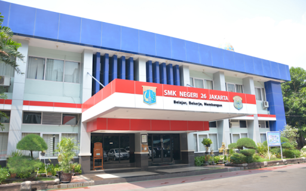

About

SIJA atau Sistem Informatika, Jaringan, dan Aplikasi adalah salah satu jurusan yang terbilang baru di SMK sejak tahun 2017. SMK dengan sistem 4 tahun ini berbeda dengan yang lain, di mana program PKL atau magang ini berada pada tingkat ke-4 atau di kelas 13 dengan durasi PKL selama 10 sampai 12 bulan.
SMK Negeri 26 Jakarta merupakan lembaga pendidikan kejuruan yang bertugas meningkatkan Sumber Daya Manusia (SDM) yang sesuai dengan kebutuhan Industri dan Masyarakat.
